| Orthogonalproj. | Zentralproj. |
| Abbildung eines 3D Systems auf ein 2D System | |
| parallele Linien bleiben parallel | parallele Linien treffen sich im Bild (Horizont) |
| Dritte Dim. wird verworfen: $(x, y, z)^T \to (x, y)^T$ | abh. von einer Brennweite: $(x, y, z)^T \to (f \frac x z, f \frac y z)^T$ |
| Abbildung ist unabhängig von der Entfernung (in z) zur Abbildungsebene | Entfernte Objekte sind kleiner |
| Quadratisch | Hexagonal | Dreieckig | |
| Nachbarschaft & Darstellbare Linien |  | ||
| Vorteile |
|
Nachbarschaftsbeziehung eindeutig | - |
| Nachteile | keine eindeutige Nachbarschaftsbeziehung $\Rightarrow$ zusammenhängende Regionen nicht eindeutig def. |
- | - |